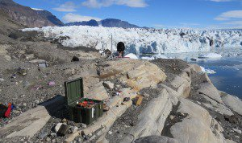
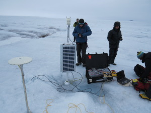

I am currently working to better identify the factors controlling iceberg calving at adjacent tidewater glaciers in Western Greenland. Working as part of a team during the 2013 summer, I installed seismometers near the glacier termini to record variations in glacier-generated seismic signals, including calving icequakes. Analysis of 2 years of continuous data will allow me to identify variations in calving rate that may be related to contrasts in ice thickness, fjord depth, and glacier strain rate. Seismic data is supported by results from a ground-portable radar interferometer that allow me to finely resolve changes in ice motion during 10 days of the 2014 summer. Results of this work will advance our understanding of calving physics, and how changes in tidewater glacier environments can affect increasing rates of ice loss at the edges of the Greenland Ice Sheet.
This research is part of a larger, 3-yr, NASA-funded project led by Ginny Catania that seeks to better understand ice/ocean interactions and glacier variability in Greenland. While on average, glaciers in Greenland are losing mass, there are significant glacier-to-glacier differences in mass balance. One of the leading hypotheses is that local ocean circulation, within individual fjords, limits the ability of warm ocean water to reach glacier termini and force increases in terminus ice melt. Another hypothesis holds that differences in calving style or glacier geometry mediate glacier response to climate change.


To understand the sources of glacier variability, the project team, including glaciology and oceanography PIs from 4 universities as well as from NASA, is studying 3 adjacent glaciers and fjords in West Greenland. Our study glaciers, including Rink Isbrae (71.6 deg N, 51.6 deg W) and its neighbors, exhibit a wide variety of dynamic behaviors, including terminus retreat/rapid thinning, stable terminus/slow thinning, and stable terminus/minor thickening. By collecting field data on the glaciers and within the fjords, analyzing remotely sensed data, and developing new models of glacier flow and ocean circulation our team is developing a better picture of Greenland Ice Sheet mass change, now and in the future.
My contributions to this project were funded by a postdoctoral fellowship from the University of Texas Institute for Geophysics.
You can learn more about this project in the short article here or by viewing a brief documentary on Vimeo focused on the oceanography component of this project. Photographs from the beautiful locations this work took place are here.